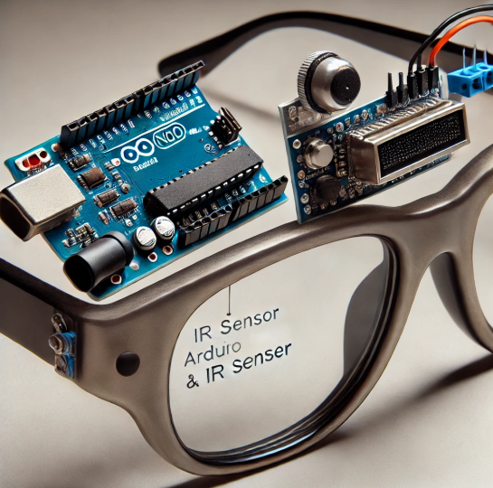
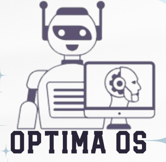

Shaping the future through Computer Systems Engineering, blending hardware and software into impactful solutions. From IoT projects and embedded systems to sleek web designs and intelligent networks, I transform concepts into reality. Together, let's push the boundaries of technology!
Download CVFrom a curious student to a passionate technologist, my journey has been filled with learning, growth, and exciting projects. Here's a glimpse of the milestones that have shaped my career path.
Was a layperson, unaware of the vast world of technology. With a curious mind and a desire to explore, I took my first steps into the realm of tech, eager to uncover its potential.
Took the first step toward my passion for technology by pursuing a degree in Computer Systems Engineering. This marked the beginning of my journey into the world of computers, networks, and system designs.
2023 was a year of immense struggle, as I coped with the heartbreaking loss of my father. The emotional toll made it difficult to stay focused, but I pushed through the challenges, relying on my determination to continue my studies and grow both personally and professionally. This year tested my resilience and taught me how to navigate adversity while continuing to move forward.
Was a transformative year, marked by collaboration and creativity. I participated in workshops, built innovative projects, and engaged in team efforts that honed my technical and interpersonal skills. This year emphasized the value of teamwork and adaptability in achieving impactful outcomes.
Now in 2025, I continue to push boundaries by exploring advanced technologies and taking on ambitious projects. This year is all about growth, discovery, and laying the groundwork for an exciting future in tech.
Below is a list of my key skills that I have honed through my academic and professional journey:
Skilled in various programming languages to develop efficient, high-performance applications.
Crafting responsive, user-centric websites with a strong focus on design and functionality.
Designing smart devices and systems for seamless interaction between hardware and software.
Configuring and optimizing networks for secure and efficient communication and data exchange.
Proficient in using essential tools like Visual Studio Code, GitHub, and XAMPP to enhance development efficiency.

What if a pair of glasses could save your life by preventing you from falling asleep at the wheel or during critical tasks? Introducing Anti Sleep Glasses, an ingenious safety solution that uses an Arduino Nano and an IR sensor to detect eye closure. When your eyes remain closed for a set period, indicating drowsiness, the system triggers a loud buzzer, instantly waking you up and alerting you to danger. It's a simple yet powerful technology that could revolutionize safety for drivers, workers, and anyone who needs to stay alert. Intrigued by how this system works seamlessly to protect you from fatigue-related accidents? The innovation is just one step away from ensuring safety when you need it most!

What if you could experience the core functions of an operating system in a simple yet efficient way? OPTIMA OS is a mini OS built with C language, offering process management through a First Come First Serve (FCFS) algorithm, dynamic memory allocation via `malloc`, and interprocess communication using shared memory. The intuitive Command Line Interface (CLI) lets you open Notepad, browse File Explorer, check system specs, or shut down the OS. Curious about how an operating system works behind the scenes? OPTIMA OS brings you a streamlined yet powerful look into the essentials of OS functionality—simple, efficient, and innovative.
What if a single tool could solve all your matrix problems instantly? Built with C++, the Matrix Calculator does just that, effortlessly computing the determinant, inverse, and adjoint of any given matrix. Enter your matrix, and in seconds, you get accurate results for all three operations—whether you need to solve equations, find matrix transformations, or calculate the determinant for analysis. This powerful tool simplifies complex matrix tasks, saving you time and effort. Curious about how a C++ program can handle these challenges so efficiently? Matrix Calculator unlocks the power of quick, precise matrix calculations in one easy-to-use solution.
What if a pair of glasses could save your life by preventing you from falling asleep at the wheel or during critical tasks? Introducing Anti Sleep Glasses, an ingenious safety solution that uses an Arduino Nano and an IR sensor to detect eye closure. When your eyes remain closed for a set period, indicating drowsiness, the system triggers a loud buzzer, instantly waking you up and alerting you to danger. It's a simple yet powerful technology that could revolutionize safety for drivers, workers, and anyone who needs to stay alert. Intrigued by how this system works seamlessly to protect you from fatigue-related accidents? The innovation is just one step away from ensuring safety when you need it most!
What if you could experience the core functions of an operating system in a simple yet efficient way? OPTIMA OS is a mini OS built with C language, offering process management through a First Come First Serve (FCFS) algorithm, dynamic memory allocation via `malloc`, and interprocess communication using shared memory. The intuitive Command Line Interface (CLI) lets you open Notepad, browse File Explorer, check system specs, or shut down the OS. Curious about how an operating system works behind the scenes? OPTIMA OS brings you a streamlined yet powerful look into the essentials of OS functionality—simple, efficient, and innovative.
What if a single tool could solve all your matrix problems instantly? Built with C++, the Matrix Calculator does just that, effortlessly computing the determinant, inverse, and adjoint of any given matrix. Enter your matrix, and in seconds, you get accurate results for all three operations—whether you need to solve equations, find matrix transformations, or calculate the determinant for analysis. This powerful tool simplifies complex matrix tasks, saving you time and effort. Curious about how a C++ program can handle these challenges so efficiently? Matrix Calculator unlocks the power of quick, precise matrix calculations in one easy-to-use solution.
Creating visually appealing and interactive websites using modern front-end technologies like HTML, CSS, JavaScript, and React. I focus on delivering seamless user experiences, responsive designs, and intuitive interfaces that work across all devices.
Developing innovative and practical programming projects across various languages and platforms. I bring complex ideas to life with clean, efficient, and scalable code, tailored to meet client requirements and solve real-world problems.
Designing and building Internet of Things (IoT) projects that connect devices and enhance automation. Whether it's smart home systems or wearable technology, I work on creating integrated solutions for smarter living and better efficiency.
Generating unique, forward-thinking project ideas that can disrupt industries or solve current challenges. I offer creative solutions for individuals and organizations looking to stand out in their fields through innovation
Providing comprehensive training to newcomers in the tech field, covering programming, web development, IoT, and more. I guide individuals through the basics, ensuring they gain a strong foundation and the skills needed to succeed in the industry.
I'm open to new opportunities and collaborations. Feel free to reach out: